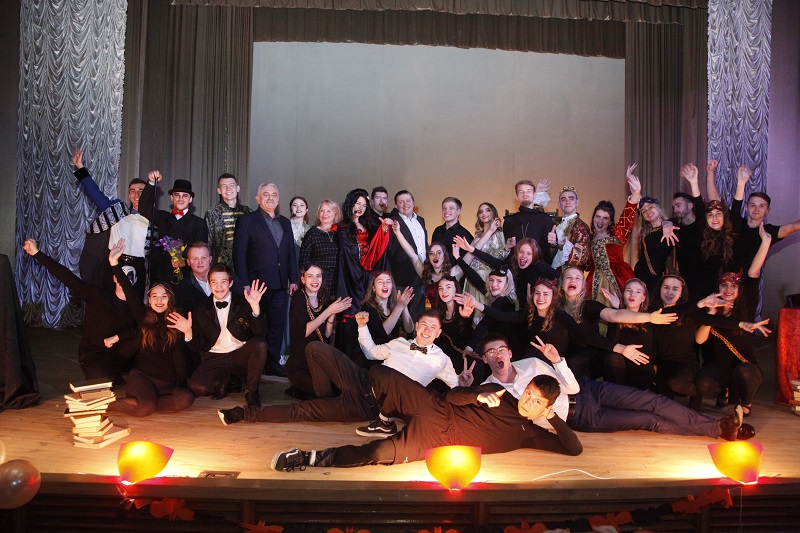
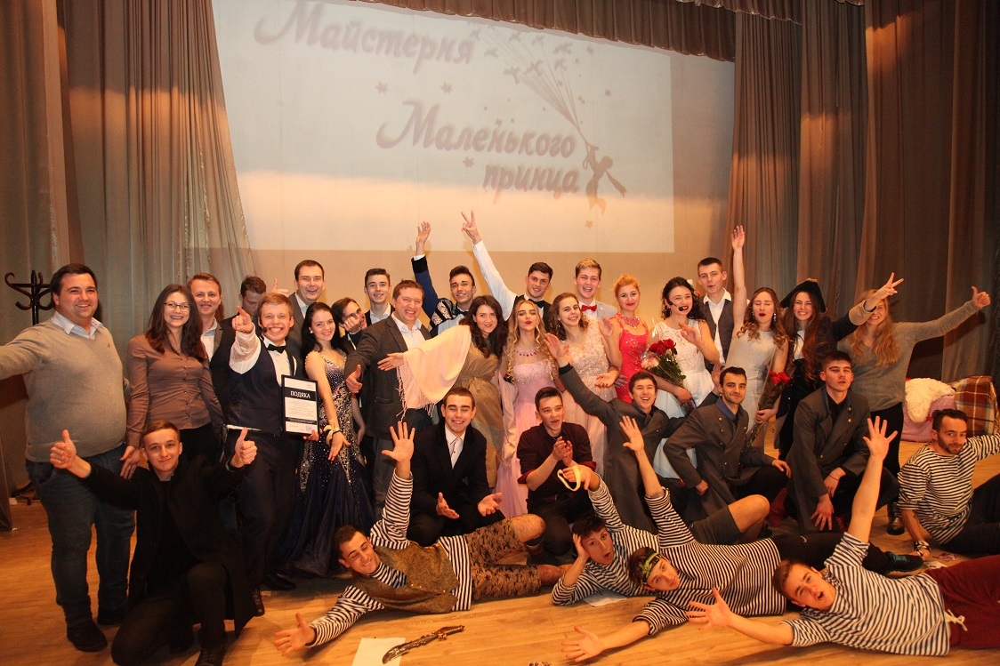
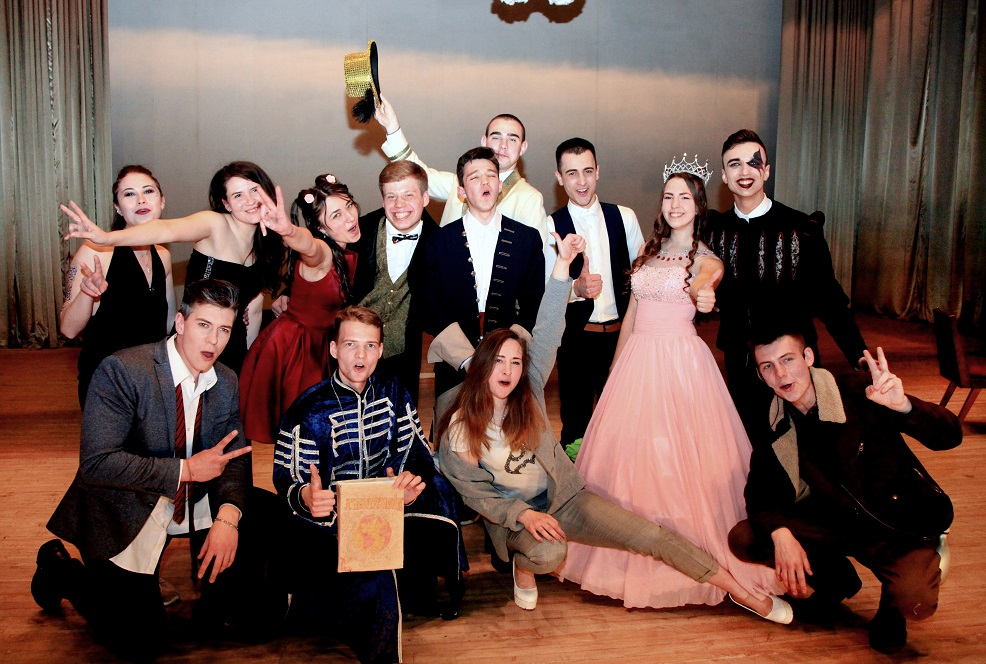

ВИСТАВОЮ «ВІДЬМА. СПОКУСА – НАЙДОРОЖЧИЙ ГРІХ» СТУДЕНСЬКИЙ ТЕАТР «МАЙСТЕРНЯ МАЛЕНЬКОГО ПРИНЦА» ВІДЗНАЧИВ НАЙМІСТИЧНІШИЙ ДЕНЬ РОКУ
31 жовтня 2019 року на сцені конференц-залу фізико-хімічного корпусу НМУ імені О.О.Богомольця успішно пройшла прем’єра вистави студентського театру «Майстерня маленького принца» з інтригуючою назвою «Відьма. Спокуса – найдорожчий гріх». Перед початком спектаклю присутніх привітав перший проректор з науково-педагогічної роботи та післядипломної освіти, професор Ю.Л.Кучин. Юрій Леонідович висловив щире здивування тим, що вільних місць у залі фактично не було, що свідчить з одного боку про зростаючу популярність студентського театру, з другого – про прихильність університетської молоді до мистецтва, до прекрасного. Із цим, звичайно ж, були згодні і його колеги – проректор з науково-педагогічної та виховної роботи, професор О.А.Канюра і проректор з науково-педагогічної роботи, міжнародних зв’язків та європейської інтеграції, професор Р.Л.Скрипник, які також зайняли місця у першому ряду і приготувалися до яскравої і, як дуже швидко з’ясувалося, професійно поставленої вистави. Важко було повірити, що актори, які виголошували на сцені монологи і діалоги, репліки на медичну тему, демонстрували лицарські двобої, блискуче танцювали і співали, працюють разом лише близько трьох років. Режисер і художній керівник театру – старший лаборант кафедри пропедевтики внутрішньої медицини №2 Олександр Макаренко з любов’ю і вдячністю говорить про своїх колег – акторів, серед яких Інна Макаренко, його дружина, студентка V курсу медичного факультету №4, виконавиця головної ролі – відьми Беатрис, Назарій Носенко, студент V курсу Київського національного університету театру, кіно і телебачення імені І.К. Карпенка-Карого та багатьох інших. Окрасою вистави були появи на сцені танцювальної групи «MedCrew», яку очолює студентка IV курсу медичного факультету №2 Ольга Юрчишина. Окремо колектив студентського театру висловив подяку за вагому участь у підготовці спектаклю адміністрації НМУ, начальникові відділу організаційно-педагогічної роботи та довузівської підготовки О.С.Горовій, завідувачеві бібліотеки Л.В.Папуші, голові профкому студентів Юргенові Тайєру, голові студентської ради Університету О.М.Вершуті та іншим.
ПРЕМ’ЄРА СТУДЕНТСЬКОГО ТЕАТРУ «МАЙСТЕРНЯ МАЛЕНЬКОГО ПРИНЦА»
14 грудня 2018 року в конференц-залі фізико-хімічного корпусу Університету відбувся справжній вир емоцій. Наші студенти, актори творчого об’єднання “Майстерня Маленького принца“, підготували особливу виставу “На варті твоїх снів“ та вдруге вразили глядачів своїми талантами. Автор постанови – студент 6-го курсу медичного факультету №2 Олександр Макаренко, головна героїня – студентка 4-го курсу медичного факультету №4 Інна Макаренко. У виставі взяли участь сорок акторів-аматорів. Події історії розвивалися навколо дівчини, батько якої зазнав фінансової катастрофи, та її подорожей через сновидіння. Доля головної героїні опинилася під загрозою, адже заможний негідник, сер Олаф, хотів скористатися складним становищем та одружитися з нею. Однак у світі мрій дівчина зустрічала різних персонажів, які уві сні, а потім і в реальності, допомагали їй вийти із скрутної ситуації: Капелюшник, Чеширський кіт, Шерлок Холмс, королева, пірати. Межа між дійсністю та уявою остаточно зникає, адже головна героїня по-справжньому закохалася в одного з персонажів, який супроводжував її протягом усіх снів… стояв на їх варті. Окрім романтичної історії та драматичних кульмінацій, виступ акторів супроводжувався творчими композиціями: танцями, співами, музичними номерами. Бурними оваціями завершилось це феєричне дійство. Актори висловили подяку за активну підтримку і допомогу в проведенні цього заходу голові профкому студентів Юргену Тайєру, голові Студентського парламенту Олександру Вершуті, адміністрації Університету в особі виконуючого обов’язки ректора, професора Ю.Л.Кучина. В залі були розміщені скриньки для збору коштів на порятунок життя молодого хлопця, близького друга акторів. Всі присутні мали змогу долучитися до благодійної акції. Після вистави в гарному піднесеному настрої перебували і актори студентського театру і глядачі, емоції переповнювали всіх присутніх на цьому святі талановитої молоді!
НА СТУДЕНТСЬКІЙ СЦЕНІ – ТВІР ФРАНЦУЗЬКОГО ПИСЬМЕННИКА А. СЕНТ-ЕКЗЮПЕРІ «МАЛЕНЬКИЙ ПРИНЦ»
Виставою «Маленький принц» завершився конкурс-фестиваль студентської творчості «Med-Drive». Поки за закритою кулісою сцени актової зали у фізико-хімічного корпусу НМУ йшли останні приготування, до глядачів звернулися ініціатори проведення студентської весни перший проректор з науково-педагогічної роботи та післядипломної освіти, професор Ю.Л. Кучин, голова профкому студентів Ю. Тайєр, виконуючий обов’язки голови Студентського парламенту О. Вершута. Вони привітали студентів зі святом та подякували їм за творчу і громадську активність. Юрій Леонідович зазначив, що адміністрація Університету буде й надалі підтримувати самодіяльне мистецтво майбутніх медиків у різних його проявах. Сценаристом, актором і водночас режисером прем’єри став шестикурсник медичного факультету №2 Олександр Макаренко. Ще кілька місяців тому його театр поставив першу виставу, а нині аматори сцени запропонували глядачам своє драматургічне бачення твору відомого французького письменника Антуана де Сент-Екзюпері «Маленький принц». Хоча на сцені було небагато декорацій, зате актори заповнили її музикою, танцями і талановитою грою. Відчувалося, що філософські роздуми казки про сенс життя, кохання, дружбу, дитячу щирість і безпосередність знайшли відгук у молодого покоління. Глядачі протягом усього спектаклю підтримували артистів гучними оплесками та вигуками «Браво!», створюючи справжню святкову атмосферу.